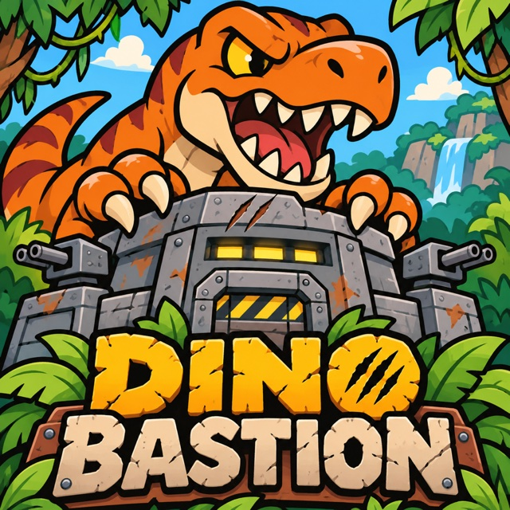

Pack to fit
Rotate bulky weapons to fill your backpack. Merge two matching pieces of the same level to free up space and hit harder.

Rotate bulky weapons to fill your backpack. Merge two matching pieces of the same level to free up space and hit harder.
Choose a specialist and combine ballista bolts, arc shocks, shields and medical gear.
Outlast quick raptors, armored ankylosaurs and the T-Rex. Spend earned supplies between waves.